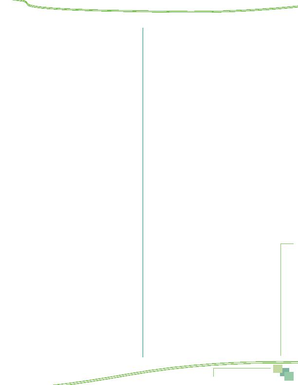

MWCOG-Comm
uter Conn
ecti
on
s-- 2010 State o
f th
e Comm
ute Report
8 5
5 save money
6 save time
7 gas prices too high
8 tired of driving
9 prefer to drive, wanted to drive
10 safety
11 no vehicle available
12 car became available, additional car in household
13 to stay with family/children
14 HOV lanes too congested
15 Congestion (other)
16 always used
17 close to work or transportation pick up/drop off
location
18 afraid of or didn't like previous form of transportation
19 stress
20 weather
21 bought hybrid vehicle
22 convenient
(NOT AN ANSWER, PROBE FOR WHY IT'S
CONVENIENT)
23 to get exercise
24 concerned about the environment, global warming
Commute Services/Programs
25 new option that became available
26 special program at work
27 pressure or encouragement from employer
28 GRH
29 Ozone action/Code Red days
30 no parking
31 parking expense, parking cost too high
32 found carpool partner
33 NuRide (VA carpool incentive)
34 SmarTrip/SmartBenefit, Metrochek, transit subsidy,
vanpool subsidy
35 Commuter Choice Maryland
Information/Promotion
36 advertising
37 initiated request/looked for information on my own
38 info. from Commuter Connections/Council of
Governments/COG/800 number
39 Commuter Connections web site
40 other web site
41 word of mouth/recommendation
42 information from transit agency
43 saw highway sign
44 yellow pages
45
Other
88 Don't know
99 Refuse
22 In the past two years, have you used or tried any
other type of transportation between home and
work that you've not already mentioned?
1 yes
2 no
(SKIP TO INSTRUCTIONS BEFORE Q28)
23 What was that type of transportation?
(DO NOT
READ; CHECK ALL THAT APPLY. IF Q23 = Q15 ANY DAY OR
Q19a, INTERVIEWER PROMPT, "YOU ALREADY MENTIONED
<MODE Q15, Q19a>, DID YOU TRY ANY OTHER TYPE OF
TRANSPORTATION?"
1 compressed work schedule day off
2 telecommute
3 drive alone
4 motorcycle
5 carpool, including carpool with family member,
dropped off
6 casual carpool (slugging)
7 vanpool
8 buspool
9 bus
10 Metrorail
11 MARC
12 VRE
13 AMTRAK, other train
14 bicycle
15 walk
16 N/A
17 N/A
18 N/A
19 taxi
20 N/A
21 N/A
99 don't know, refused
24 How long did you use
<Q23 mode(s)>
?
(DO NOT READ)
_______ months (CONVERT YEARS TO MONTHS)
0 less than one month
888 occasionally (tried one, emergency use)
999 still using
-997 Don't know
SET Q23LONG = Q24, LONGEST DURATION
IF Q24 = 999 (STILL USING) FOR ANY MODE, THAT MODE
= Q23LONG
IF Q24 = 888 (occasionally) FOR ANY MODE, THAT MODE
= Q23LONG, UNLESS RESPONDENT MENTIONED BOTH
OCCASIONAL MODE AND OTHER MODE, THEN USE OTHER
MODE
26 What prompted you to use or try this type of
transportation?
(DO NOT READ; IF MORE THAN THREE
REASONS GIVEN, PROBE FOR 3 MOST IMPORTANT AND
CODE ONLY THOSE 3) (OKAY NOT TO SHOW INFREQUENT
INCIDENCE RESPONSES ON SCREEN CODE AS OTHER
THEN CODE TO PROPER CATEGORIES IN POST-PROCESSING)
Personal circumstances/preferences
1 changed jobs/work hours
2 moved to a different residence
3 employer or worksite moved
4 spouse started new job
Appendix--Survey Questionnaire